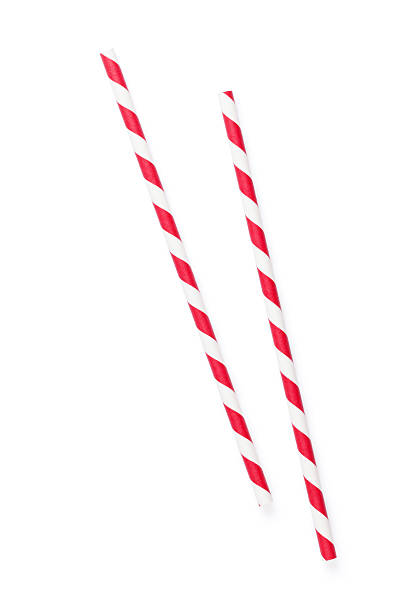
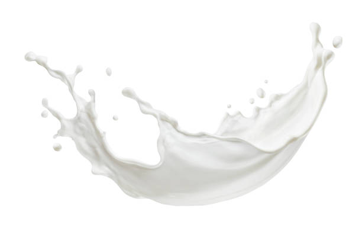

Boba Tea | Quick Game & Fun Facts
Play rock paper scissors with Boba, Straw, and Milk and learn 10 friendly facts about bubble tea.
Play: Choose one
compact game logic: Boba > Straw, Straw > Milk, Milk > Boba
Boba

Straw

Milk
Pick an option to start, good luck!
You: 0
•
Computer: 0